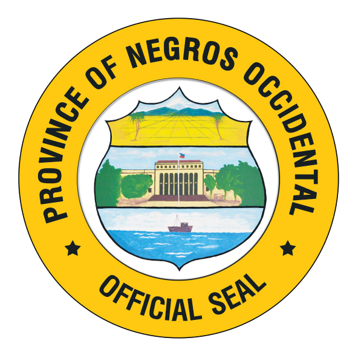
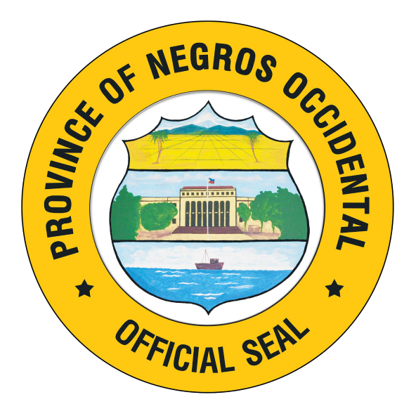

Among the laws he principally authored are the following:
- Republic Act (RA) 11961 or the Cultural Mapping Law
- RA 11960 or the One Town, One Product (OTOP) Philippines Act
- RA 11726 or the Edades and Bernal Museum Act
- RA 11194 or the Gabaldon Schoolbuilding Conservation Act
- RRA 11363 or the Philippine Space Act
- House Bill (HB) 615 or the Freelance Workers’ Protection Bill; HB 1270 or the Eddie Garcia Bill, which aim to advance and protect the rights and welfare of workers
- HB 613 or the Young Farmers and Fisherfolk Challenge Bill; HB 616 or the Integrated Urban Agriculture Bill; and HB 2684 or the Aqua-Negosyo Program Bill, which seek to promote food and agricultural development
- HB 1281 or the Creative Incentives Bill; HB 619 or the Philippine Gastronomy and Culinary Heritage Development Bill; and HB 622 or the establishment of the National Museum of Design, which are geared towards further promoting and developing our creative industries.
- www.explorepd4.com (Explore Pangasinan District 4), the tourism and culture website which features MSMEs, tourist sites, and local creatives in the fourth district of Pangasinan
- Anakbanwa Creative Residency which encourages artists from all over the Philippines to immerse in and collaborate with the community and produce new art forms
- Galila Arts Festival, a 10-day multi-arts event that celebrates the flourishing creative community in the district
- Calamansian ed Lekep Butao that offers visitors a unique calamansi-picking experience to help boost farmers’ livelihood
- San Fabian Biker’s Den and the Tondaligan Beach Boardwalk to help spur tourism in Dagupan City.
Quote: “Let us work together in giving our many creative industries the support and recognition they deserve. A creative future should not be left to chance. It is planned, not dreamed. It is organized, not whimsical. It is taken seriously, and not treated as an afterthought. After all, a creative future is safe, sustainable, and happy – for all. Because truly #TheFutureIsCreative.”


 
